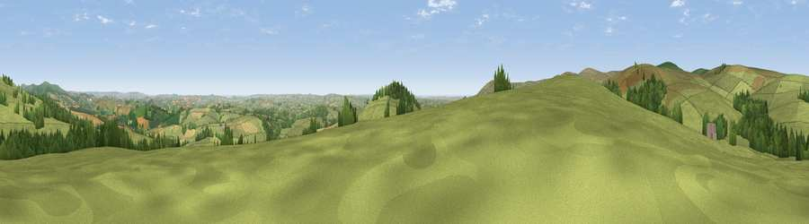

Viewpoint near Didworthy
#5329 in England · top 12% of its area beats it · near DidworthyWhere it is
The exact computed spot (SX 70262 63225). Click the marker for map links.
The view, rendered

A 360° render of this exact spot computed from the terrain model, tree cover and land cover — summer colours, afternoon light, calibrated against photographs of famous viewpoints. Real trees, hedges and buildings will differ in detail.
The panorama
Grey silhouette: terrain skyline in each direction (720 bearings, Earth curvature and refraction included). Dashed green: skyline with trees (+15 m) and buildings (+8 m) as obstacles. Blue strip: how far the ground is visible on each bearing.
Where the view opens
Wedge length = distance to the farthest visible ground on that bearing (vegetation-aware). Rings at 10, 25 and 50 km.
What fills the view
77% grassland · 13% woodland · 10% cropland
Angular shares of the visible panorama (visual magnitude), not map area. Landscape diversity 0.32 (0–1 Shannon).
Key numbers
More beautiful places nearby
The staircase of upgrades: each row has a higher view potential than everything closer. Driving times are estimates from straight-line distance, calibrated against real road routing — check an actual route before setting out.
| Place | Direction | Drive | Score |
|---|---|---|---|
| Brent Hill | S · 2 km | ~4 min | 79.3 |
| Ugborough Beacon | SW · 5 km | ~12 min | 79.5 |
| Western Beacon | SW · 7 km | ~15 min | 81.9 |
| Viewpoint near Lee Moor | W · 14 km | ~26 min | 82.7 |
| Viewpoint near Stokeinteignhead | ENE · 23 km | ~38 min | 84.1 |
| Viewpoint near Hope | S · 25 km | ~40 min | 84.4 |
| Viewpoint near East Prawle | SSE · 28 km | ~44 min | 84.6 |
| High Peak | ENE · 46 km | ~66 min | 85.3 |
50.45447, -3.82893 · source: screening · position refined by local search. Computed location — check access rights before visiting.